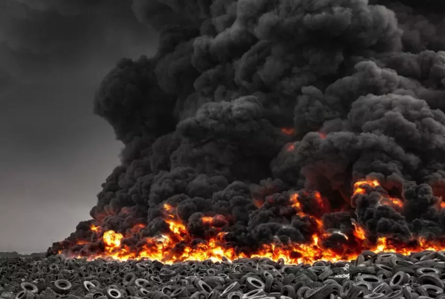
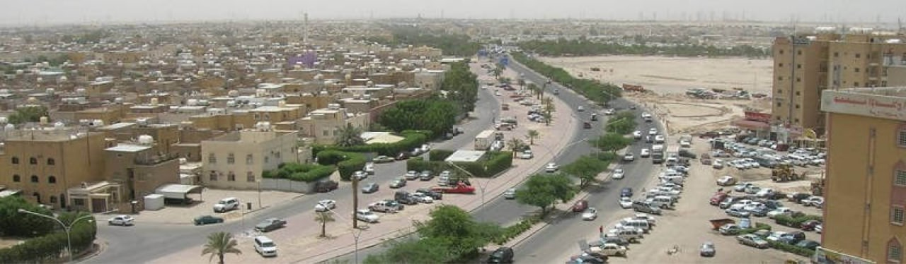

Компанія Waste Energy
Переробка шин та інших полімерних відходів


Переробка шин та інших полімерних відходів
18.02.2022
У Кувейті горить найбільше у світі звалище автомобільних шин, повідомляють місцеві ЗМІ. Очевидці публікують фотографії та відео пожежі та зазначають, що гігантський стовп диму видно здалеку, і, судячи з фотографій із Twitter, навіть із космосу. Екологи вже б'ють на сполох: якщо вогонь не вдасться погасити найближчим часом, то це може завдати значної шкоди природі, тому що при горінні старих шин відбувається виділення небезпечних речовин: найсильніших канцерогенів біфеніла та бенз(а)пірена, а також діоксину, фурану, антрацену. та свинцю.
© FA Climate, Weather and Atmosphere / YouTube.com
Ліза Будріна: "Пожежа почалася 3 серпня; стовпи чорного отруйного диму, що піднялися високо в небо, видно здалеку. Поки охоплено порівняно невелику частину кладовища шин, що займає площу 600 тисяч квадратних метрів», — передають очевидці. У Мережі також з'явилося відео інциденту від анонімного автора. YouTube-канал FA Climate, Weather and Atmosphere, що перезалив ролик, б'є на сполох: пожежа загрожує екологічною катастрофою, відео було знято на кладовищі покришок у Сулайбії, яке вважається найбільшим у світі — там зберігається понад 52 мільйони шин. , на яких дійсно видно дим над звалищем."

4kolesa.mirtesen.ru
Це вже не перший подібний випадок цього року. Так, за даними Xinhuanet.com, у квітні цього року спалахнули покришки на цвинтарі в мухафазі (провінції) Джахра. Було висунуто версію, що причиною став підпал.
https://www.hunt-dogs.ru/el-dzhaxra/
Місцева влада має намір боротися з безсистемним зберіганням гуми, що відслужила своє — покришки зберігаються на таких звалищах вже понад 30 років. З осені минулого року уряд обговорює можливості утилізації шин, проте, зважаючи на все, проблему досі не вирішено.
Tengrinews.kz
Дивіться також:
Величезний цвинтар позашляховиків Range Rover у Британії.
Спорткар Porsche 1969 року, який забули у гаражі на 40 років, виставили на продаж за 23 тис. доларів.
За час війни в Україні закрилося понад 4 тис. АЗС.
Телефон: +38(011)-111-11-11
Адреса: вул. Татарова, 15
© 2022 Developer. All rights reserved
Зменшіть екран до 551рх, або cкористайтеся десктопною версією сайту